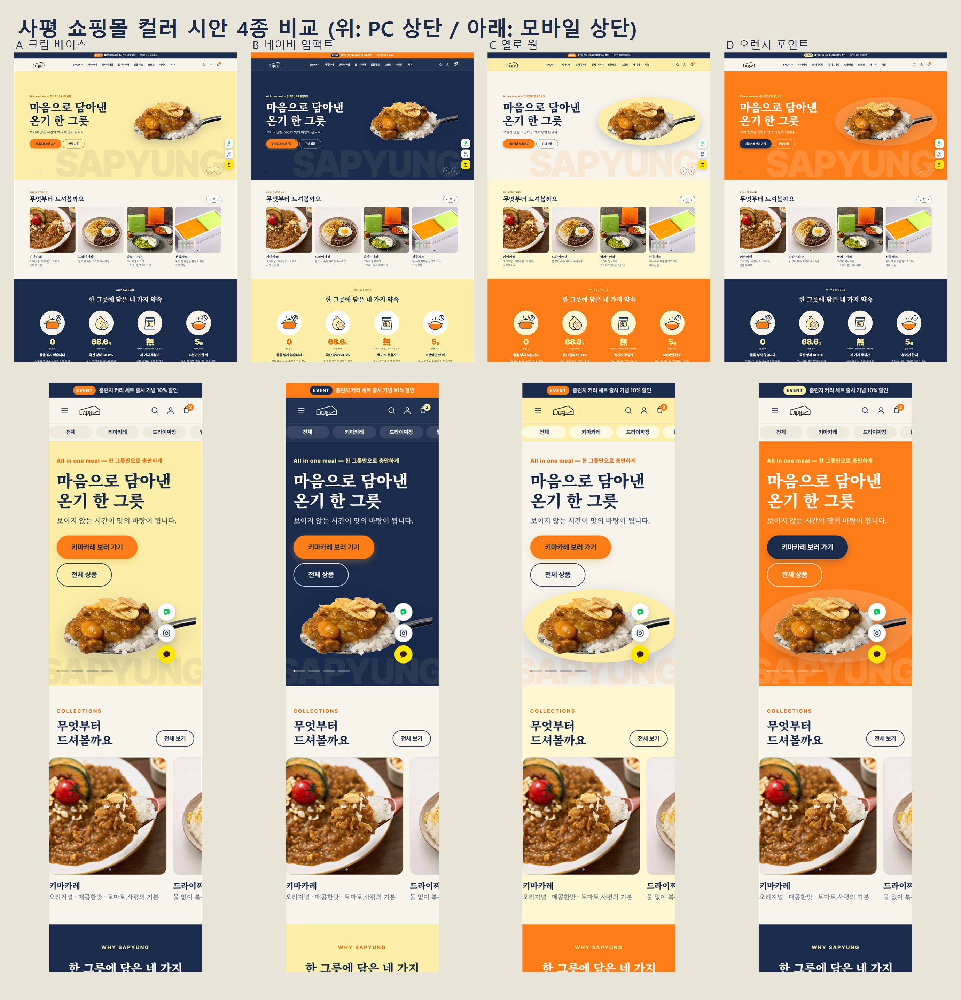

지정 4색(네이비 #1a2b4c · 옐로 #fdeea7 · 배경 #f7f4eb · 포인트 #ff7d18)을 섹션별로 다르게 배분한 안입니다. "화면으로 보기"는 실제 동작하는 프리뷰이고, 화면 왼쪽 아래 버튼으로도 시안을 바꿀 수 있습니다.
옐로 히어로 · 네이비 약속 밴드 · 네이비 푸터 하단. 가장 무난한 기본안
네이비 헤더 + 히어로(로고 흰색) · 옐로 약속 밴드
옐로 헤더 · 크림 히어로에 옐로 원 · 오렌지 약속 밴드 · 옐로 비교표/푸터
오렌지 히어로 + 네이비 버튼 · 네이비 약속 밴드 · 옐로 비교표

이미지를 누르면 원본 크기로 열립니다. 시안 확정 후 선택안이 기본 색으로 고정됩니다.